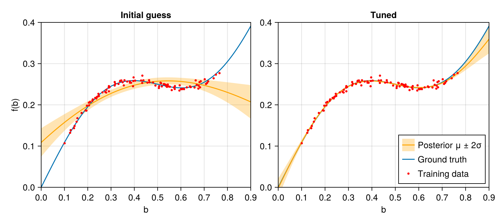

Hyperparameter Tuning
The kernel hyperparameters and the sensor noise variance $\sigma_n^2$ determine how an RGP generalises from data. This tutorial starts from an initial guess and tunes them by maximising the likelihood of the filter's one-step-ahead predictions, using Optimization.jl with gradients from ForwardDiff.jl.
Setup
using RecursiveGPs
using AbstractGPs
using StaticArrays
using LinearAlgebra
using ForwardDiff
using Optimization
using OptimizationOptimJL
using LineSearches
using LowLevelParticleFilters
using Random
using CairoMakieDataset
100 noisy observations of $f(b) = 0.5b + 0.1\sin(2\pi b)$. The noise has standard deviation 5e-3, so the true noise variance is 2.5e-5.
Random.seed!(7)
f(b) = 0.5 * b + 0.1 * sinpi(b * 2)
n = 100
us = 0.1 .+ rand(n) / 1.5
ys = [SA[f(u) + 5e-3 * randn()] for u in us];Model Factory
The kernel is a squared exponential with variance $\sigma^2$ and length scale $\ell$:
\[k(b, b') = \sigma^2 \exp\left(-\frac{(b - b')^2}{2\ell^2}\right)\]
Together with the sensor noise variance $\sigma_n^2$ this gives three hyperparameters to tune. The measurement noise R2 is the residual variance of the GP plus $\sigma_n^2$.
build_kf constructs a fresh filter from a set of hyperparameters. It is called inside the loss function, so it has to accept ForwardDiff dual numbers.
function build_kf(θ; n_basis = 20)
b0 = collect(range(0, 1, length = n_basis))
rgp = RGP(θ.σ² * with_lengthscale(SEKernel(), θ.ℓ), b0)
dynamics(x, u, p, t) = x
measurement(x, u, p, t) = measurement_gp(p.rgp, x, u) |> SVector{1}
R2(x, u, p, t) = @SMatrix [uncertainty_gp(p.rgp, u) + θ.σn²]
return ExtendedKalmanFilter((; rgp), dynamics, measurement, R2)
end
function fit(θ)
kf = build_kf(θ)
for (u, y) in zip(us, ys)
kf(u, y)
end
return kf
endfit (generic function with 1 method)Initial Guess
The length scale is longer than the input range and the noise variance is 40 times too high. The filter recovers the overall trend but treats the oscillation as noise.
θ_init = (; σ² = 0.1, ℓ = 1.0, σn² = 1.0e-3)
kf_init = fit(θ_init);Loss Function
correct! returns the log-likelihood of each measurement given all previous data. The loss is their negative sum. Unlike a squared prediction error, the likelihood also penalises a noise variance that is too large or too small, which makes $\sigma_n^2$ identifiable.
The optimiser works on unconstrained parameters. exp maps them to positive hyperparameters, and a small floor keeps the noise away from zero.
to_θ(x) = (; σ² = exp(x[1]), ℓ = exp(x[2]), σn² = 1.0e-8 + exp(x[3]))
to_x(θ) = log.([θ.σ², θ.ℓ, θ.σn²])
function loss(x, p)
kf = build_kf(to_θ(x))
cost = zero(eltype(x))
for (u, y) in zip(p.us, p.ys)
ll, _ = correct!(kf, u, y, kf.p)
predict!(kf, u)
cost -= ll
end
return cost
endloss (generic function with 1 method)Optimisation
LBFGS with a backtracking line search. The callback prints the loss every five iterations.
iteration = Ref(0)
function progress(state, l)
iteration[] += 1
iteration[] % 5 == 0 && println("iteration $(iteration[]): -log L = $(round(l, digits = 2))")
return false
end
prob = OptimizationProblem(OptimizationFunction(loss, AutoForwardDiff()), to_x(θ_init), (; us, ys))
sol = solve(prob, LBFGS(linesearch = LineSearches.BackTracking()); reltol = 1.0e-6, callback = progress)
θ_opt = to_θ(sol.u)
@info "Tuned hyperparameters" σ² = θ_opt.σ² ℓ = θ_opt.ℓ σn² = θ_opt.σn² true_noise_variance = 2.5e-5┌ Warning: The supplied DiffCache was too small and was enlarged. This incurs allocations
│ on the first call to `get_tmp`. If few calls to `get_tmp` occur and optimal performance is essential,
│ consider changing 'N'/chunk size of this DiffCache to 43.
└ @ PreallocationTools ~/.julia/packages/PreallocationTools/dNQ2d/src/PreallocationTools.jl:566
iteration 5: -log L = -349.73
iteration 10: -log L = -371.85
iteration 15: -log L = -371.89
┌ Info: Tuned hyperparameters
│ σ² = 0.131708947669769
│ ℓ = 0.439438523928987
│ σn² = 2.2591292336738487e-5
└ true_noise_variance = 2.5e-5Before and After
predict_gp returns the posterior of the function, without sensor noise.
kf_opt = fit(θ_opt)
b_plot = collect(range(0.0, 0.9, length = 200))
fig = Figure(size = (800, 360))
axs = [CairoMakie.Axis(fig[1, i]; xlabel = "b") for i in 1:2]
for (ax, kf, title) in zip(axs, (kf_init, kf_opt), ("Initial guess", "Tuned"))
p = predict_gp(kf, b_plot, :rgp)
σ = sqrt.(abs.(diag(p.Σ)))
band!(ax, b_plot, p.μ .- 2σ, p.μ .+ 2σ; color = (:orange, 0.3), label = "Posterior μ ± 2σ")
lines!(ax, b_plot, f.(b_plot); label = "Ground truth")
lines!(ax, b_plot, p.μ; color = :orange, label = "Posterior μ ± 2σ")
scatter!(ax, us, first.(ys); color = :red, markersize = 5, label = "Training data")
ax.title = title
end
axs[1].ylabel = "f(b)"
xlims!.(axs, Ref(extrema(b_plot)))
linkyaxes!(axs...)
ylims!(axs[1], 0.0, 0.4)
axislegend(axs[2]; position = :rb, merge = true)
fig
The initial guess captures the trend but smooths out the oscillation. After tuning, the estimated noise variance is close to the true value of 2.5e-5, the posterior mean follows the data, and the band widens only outside the training range, $0.1 \lesssim b \lesssim 0.77$.
This page was generated using Literate.jl.